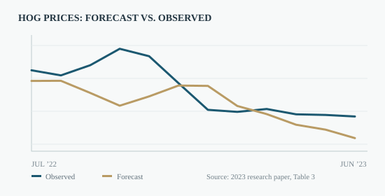

Commodity Price Forecasting with SARIMA
From seasonality diagnostics to a true 12-month out-of-sample forecast.
How well can seasonal time-series structure forecast hog prices amid supply disruptions and changing feed costs?
Modeled monthly hog prices across 22 Chinese provinces and cities using seasonal time-series methods and assessed forecasts against observed prices in 2022–2023.

How the analysis was conducted
Built a monthly price series for July 2017–June 2023 from iFinD data, trained the model on July 2017–June 2022, checked stationarity with the ADF test, reviewed ACF/PACF diagnostics and compared candidate models by AIC. Evaluated a SARIMA(1,1,0)(1,1,0,12) specification on the subsequent 12 months.
What the evidence suggests
- Reported mean absolute forecast error of CNY 3.37/kg and mean relative error of 16.92% across the holdout year.
- The forecast captured the overall decline–rebound–decline pattern but underestimated the late-2022 peak.
- External supply shocks were not directly modeled; including exogenous variables and updating the model may improve forecasts.
Based on Litao Tan, “Study on Time Series Data Mining and Trend Forecasting of Hog Price in China” (2023). Full academic paper available below. Third-party licensed datasets and employer materials are not redistributed.